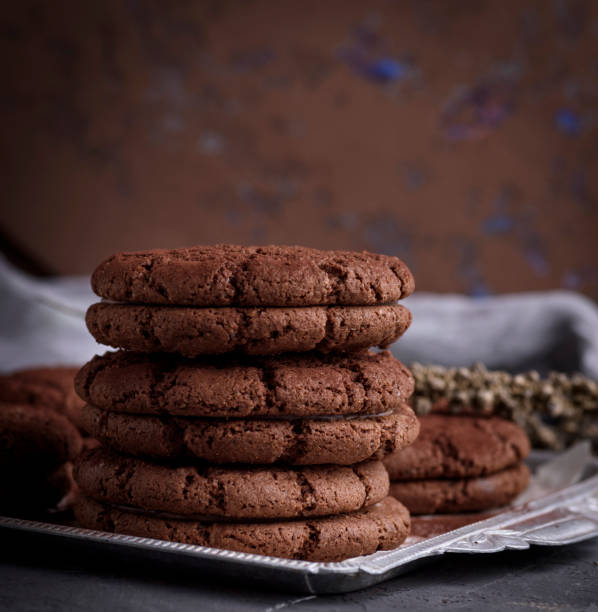

Chocolate Cookies Recipe
This is my favorite chocolate (not chocolate chip) cookie recipe EVER!
The ingredients are so so so simple and it takes under an hour to make!

Ingredients:
- 1 cup AP flour
- 1/2 cup cocoa powder
- 1/2 cup sugar
- 1 large egg
- 1/2 stick unsalted butter, room temperature
- 1 tbsp baking powder
- 1 tbsp vanilla extract
- A pinch of salt
Steps:
- Mix together flour, cocoa powder, salt, and baking powder in a medium bowl.
- Beat butter and sugar together until fluffy in a separate bowl.
- Add egg and vanilla extract to wet ingredients.
- Slowly add dry ingredients into wet ingredients. Mix until just combined.
- Chill in fridge for 15 minutes.
- Preheat oven to 350 degrees F.
- Line a baking sheet with parchment paper.
- Once cookies have chilled, use a portion scoop to place the dough onto the baking sheet. Space them 2 inches apart.
- Bake for 15 minutes or until crispy on the outside.
- Let the cookies cool on the pan for 5 minutes.
- Remove cookies from pan and place onto cooling rack to further cool.
- Enjoy your delicous chocolate cookies!
Go back home